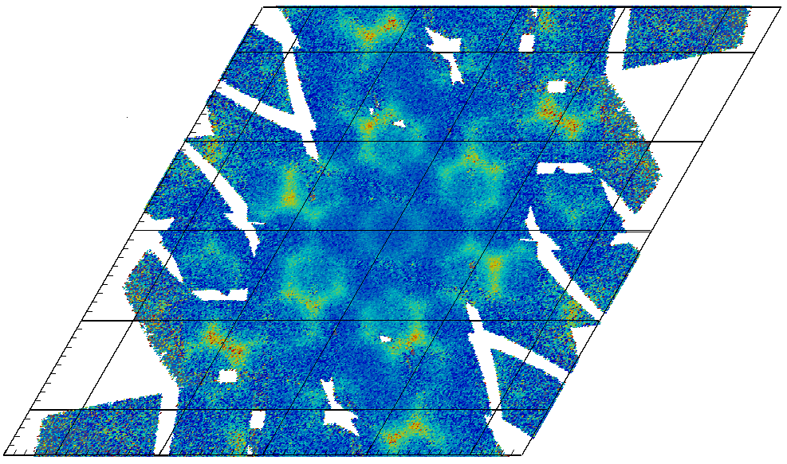

Diffraction#
Note
These release notes were recovered from an Internet Archive capture of the retired Mantid wiki. The capture is of a revision from 16 January 2015, before the release, so the final released text may have differed. Trac ticket numbers are given for reference alongside the GitHub issue the ticket was migrated to.
New Features#
In order to extend the functionality of the point group representation in Mantid, symmetry operations have been introduced. The use of both concepts through the Python interface is described in a documentation PointGroups.
For crystallographic computations beyond point group symmetry, space groups have been introduced. It is now possible to calculate equivalent atomic positions for all 230 space groups. This functionality has been exposed to Python as well.
Basic support for calculation of theoretical structure factors has been added.
A crystal structure representation has been created that combines crystal lattice, space group symmetry and basis for more advanced crystallographic calculations. A first use is implemented in PoldiCreatePeaksFromCell.
You can now rebin data by the event absolute time at the sample RebinByTimeAtSample
MD Normalisation for Single Crystal Diffraction#


New MD normalization framework allows visualization of diffuse scattering. The figure contains data from TOPAZ measurements in 11 different orientations#
General Improvements#
IntegratePeaksMD can now correctly distinguish when peak integration ranges put them over the edge of the bank.
Better documentation around EnginX specific algorithms
Output new file format for SCD peaks
Create Save algorithm to create NXTomo file
VATES specific#
New matplotlib style plotting interface pyplot as requested
Pending feature : Algorithm CutMD should be ready in a beta form in time for the release
Progress on POLDI analysis routines#
More parts of the original analysis software have been ported to Mantid:
PoldiFitPeaks2D - Fitting of individual peaks to POLDI 2D-data.
PoldiAnalyseResiduals - Residual analysis for assessing the quality of a POLDI 2D-fit.
PoldiIndexKnownCompounds - Indexing routine for POLDI peaks based on known crystal structures with support for multiple phases.
PoldiCreatePeaksFromCell - An algorithm to generate theoretical reflections as input for PoldiIndexKnownCompounds based on the crystal structure.
Improvements to existing POLDI routines
PoldiMerge - The algorithm is more flexible now regarding input data and performs more checks than previously.
The way chopper speeds are handled in the POLDI-code has been adapted to the new chopper at the beamline.
New instrument definitions for 2014 have been added.
Noteable Bug Fixes#
ConnectedComponentAnalysis core framework fix for an edge case
LoadMultipleGsas bug #11524 (Trac 10682)
ExtendedUnit Cell Defects #10861 (Trac 10019)
Add property LeastMaxPeakObsY to FindPeaks #11042 (Trac 10200)
Fix VULCAN autoreduction #11269 (Trac 10427)
Make PDDetermineCharacterizations more robust #11276 (Trac 10434)
Add support for grouped detectors to SXDMDNorm #11312 (Trac 10470)
Output new file format for SCD peaks #8677 (Trac 7832)
Cross-correlation algorithm for Corelli #10826 (Trac 9984)
Add background functions for PoldiCalculateSpectrum2D #10832 (Trac 9990)
Create PoldiPeakCollection from unit cell, point group #10835 (Trac 9993)
FITS file loader #10903 (Trac 10061)
Usability issues with GenerateEventsFilter #10911 (Trac 10069)
Merge Poldi system tests into systemtests/master #10916 (Trac 10074)
POLDI chopper speed needs to be corrected after reading files #10932 (Trac 10090)
Make SNSPowderReduction to generate GSAS file same as V-Drive #11024 (Trac 10182)
PDFgui file writer #11032 (Trac 10190)
Python version issue in SaveVulcanGSS #11051 (Trac 10209)
NXTomo Save Algorithm Improvements #11216 (Trac 10374)
FITS loader - Change how data is stored. #11225 (Trac 10383)
Removing dead pixels in calibration #11238 (Trac 10396)
POLDI specific analysis of residuals #11274 (Trac 10432)
Smooth can run in SNSPowderReduction #11350 (Trac 10508)
IntegrateFlux shod work on any matrix workspace #11387 (Trac 10545)
Enable fitting of POLDI 2D data #11465 (Trac 10623)
Rename MDNormSXD #11541 (Trac 10699)
Correct inconsistent property name in EnginXCalibrate #10928 (Trac 10086)
Modify FITS and NXTomo load/save algorithms for new files #11239 (Trac 10397)
save GSS overlapping output numbers #11284 (Trac 10442)